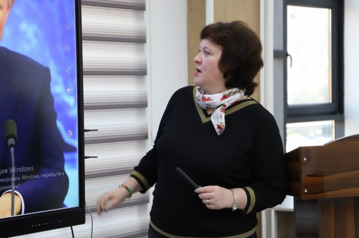
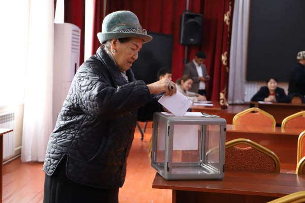

ОшМПУ “МЫКТЫ ЖОГОРКУ ОКУУ ЖАЙ” СЫЙЛЫГЫНА ЭЭ
ОшМПУ “МЫКТЫ ЖОГОРКУ ОКУУ ЖАЙ” СЫЙЛЫГЫНА ЭЭ болду.
Кененирээк ОшМПУ сайтына кириңизБул МжКТФдин расмий сайты. Бул жерде факультеттин, кафедралардын жана студенттердин жөнүндө маалыматты таба аласыз.
Математика жана Компьютердик Технологиялар факультети ОшМПУдун негизги бөлүктөрүнүн бири болуп саналат. Факультетте мыкты адистер даярдалат жана билим берүүгө чоң басым жасалат.
ОшМПУ “МЫКТЫ ЖОГОРКУ ОКУУ ЖАЙ” СЫЙЛЫГЫНА ЭЭ болду.
Кененирээк ОшМПУ сайтына кириңизОш мамлекеттик педагогикалык университетинин математика жана компьютердик технологиялар факультетинде конок-лекция уюштурулду.
Кененирээк ОшМПУ сайтына кириңиз 2024-жылдын 2-ноябрында Ош мамлекеттик педагогикалык университетинин 3 факультетинде декандык кызмат орун бошогондугуна байланыштуу шайлоо болуп өттү.
Кененирээк ОшМПУ сайтына кириңиз ОшМПУда белгилүү илимпоз Миталип Тайировдун 70 жылдыгына карата жолугушуу уюштурулду.
Кененирээк ОшМПУ сайтына кириңизОшМПУда Мамлекеттик тил күнүнө карата интеллектуалдык таймаш өттү.
Кененирээк ОшМПУ сайтына кириңизМатематика жана компьютердик технологиялар факультетинде студенттердин ата-энелери менен жолугушуу уюштурулуп, концерттик программа тартууланды.
Кененирээк ОшМПУ сайтына кириңизБайланыш номери: